Task 8: Intersight API
- APIs are very useful for automation and get information quickly.
- In this section we will go over the Intersight API Rest Client and how you can use it.
- There are open-source applications, like isctl that can be used to create your own
- Script/application.
Step 1: Where to find the Intersight API Rest Client?
When you are loged in into Intersight, you can go to the Help Center.

Figure 242
Once you are at the Intersight Help Center, Scroll all the way down to the Intersight Services” and select API Documentation.
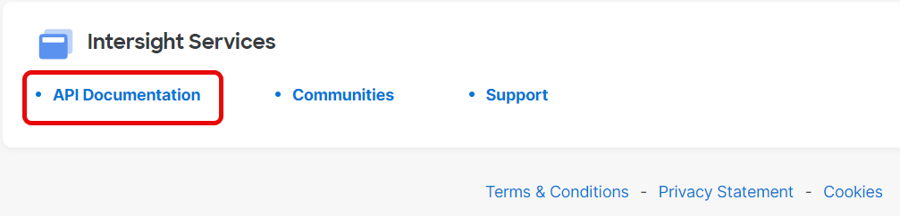
Figure 243
At the top bar, click API reference and here you will see the API Rest Client.
Figure 244
Step 2: Getting Chassis Information
In this step you will see how you can get information out of the API.
Find the equipment/Chssisidentities by using the search bar. You will see scrolling to the list is time consuming.

Figure 245
When you open it, there are two the same get. The top one is to get all information of all chassis in the tenant. The second one is to get specific information of a chassis, but then you will have to know the MOID.
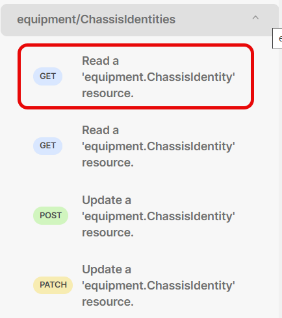
Figure 246
Select the top GET and make sure REST Client is enabled. When it is enabled, you will see the REST Client on the right. Click Send.
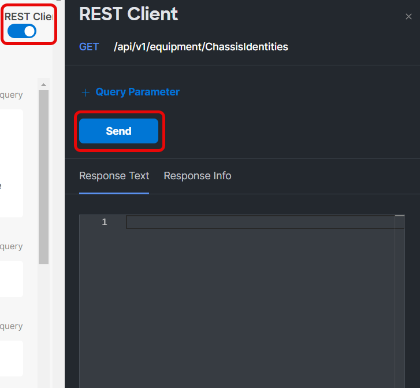
Figure 247
When you see a “200 success” the API information is there. You will see different MOID in the response and you will have to search for your chassis and MOID. Search for Chassis you want to get more information and then copy that MOID number.

Figure 248
Go back to the left and now click on the second get:
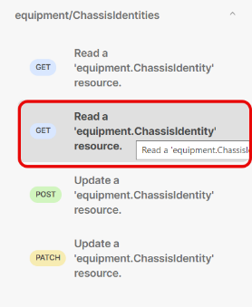
Figure 249
With this get, you need the MOID that you just copied. Fill it in the {Moid} field.
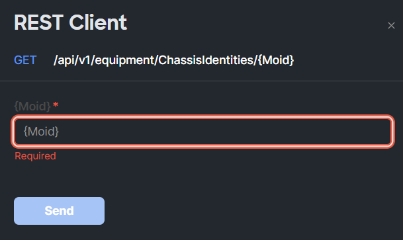
Figure 250
The result is that you get only information about one chassis.

Figure 251
Step 3: Query Parameters
To get only the information you want to have, Query Parameters can be used.
Select the first “get” of the equipment/Chassisidentities and add a Query Paramter. The Key is $select and the Value is Name, Serial. The Moid will be shown, eventhough it is not selected.

Figure 252
To show serial numbers and models of the servers connected to a particular Fabric Interconnect we are using the Compute/PhysicalSummaries API. This will give you ideas how to use the query parameters.
Find this API in the search bar.
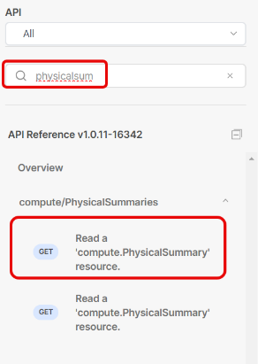
Figure 253
Select the first Get and add a Query Parameter.
Key: $select and Value: Name, Serial, Model Then add another Query Parameter:
Key; $filter and Value: startswith(Name,’RTP91-FI6454-03-1’)

Figure 254
Step 4: Opensource tools
The Intersight REST API Client is great and it is possible to use other tools like isctl. First you have to download it from : https://github.com/cgascoig/isctl
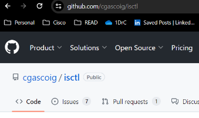
Figure 255
On the right side of the webpage, click on the latest release.
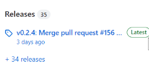
Figure 256
Download the windows version.

Figure 257
Extract the file and copy the executable in a directory on the laptop.
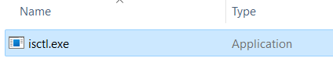
Figure 258
Before you can use this application, you must have an API key of Intersight.
Go to Intersight / Settings.
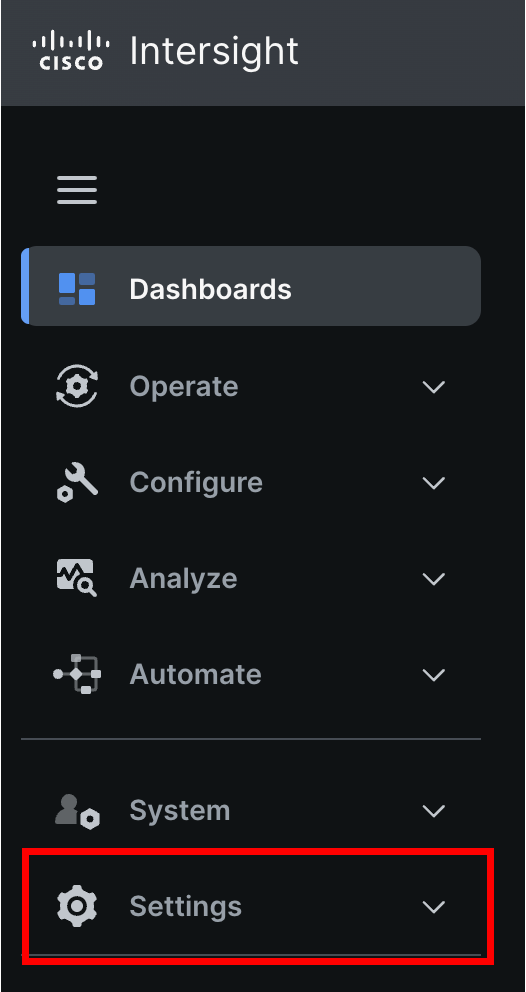
Figure 259
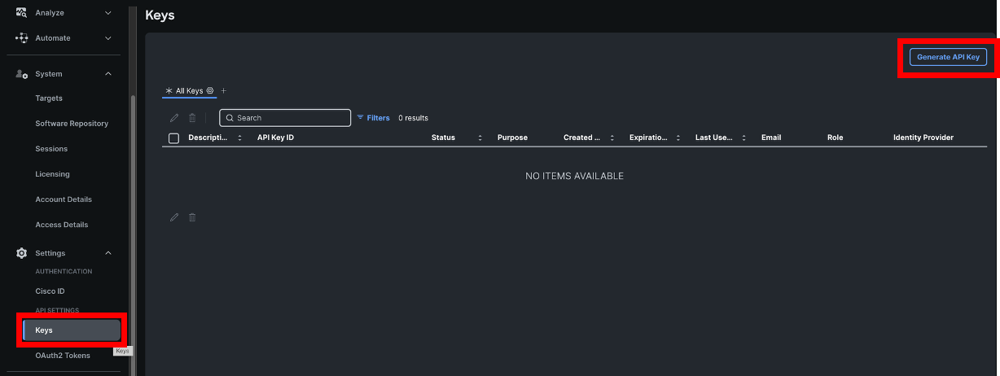
Go to API Keys and generate an API Key for OpenAPI schema version 3.
Figure 260
Give it a description and expiration date for the future.
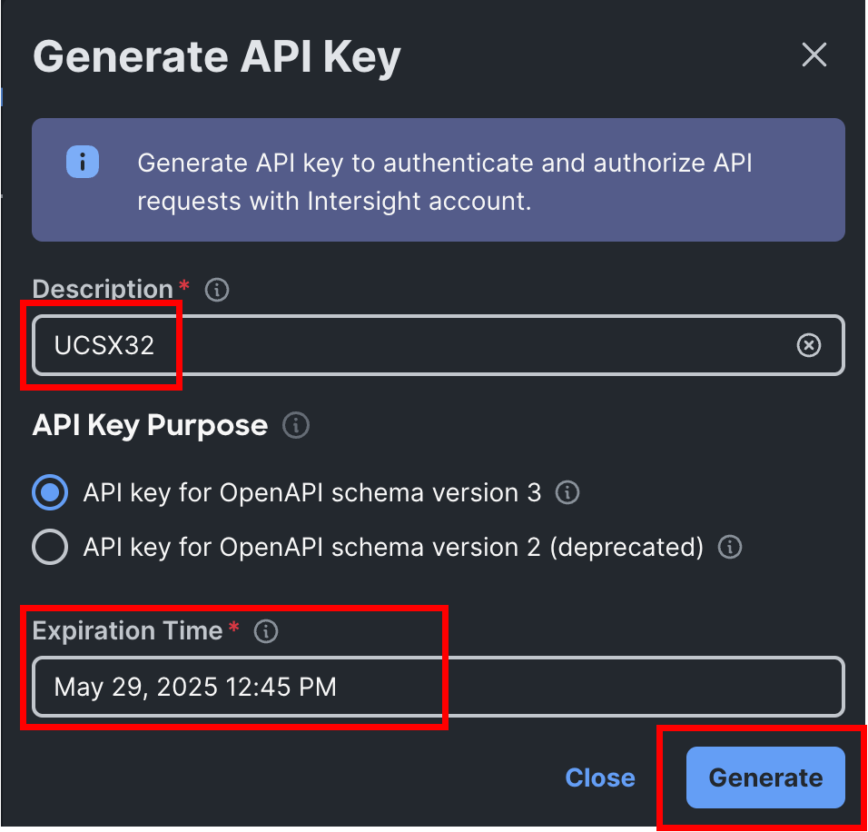
Figure 261
When the API Key is generated, copy the API Key ID and download the secret key. Do not close this window, until you are certain the isctl application is working.
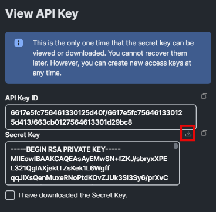
Figure 262
Open the Command prompt in Windows (CMD)
And type: isctl configure
You will have to give the API Key ID and the location of the API secret key file.
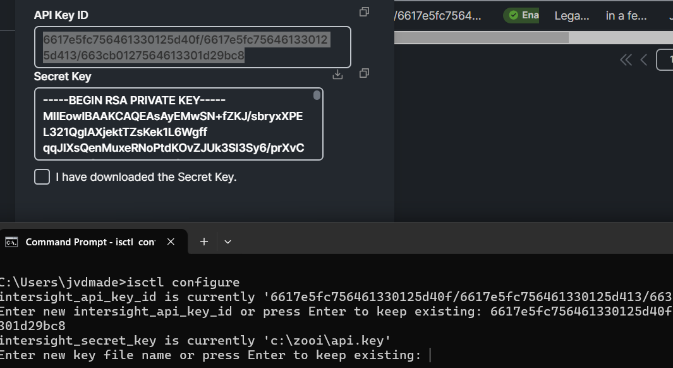
Figure 263

Figure 264
Once that is working, you can test it by typing the following command; isctl get ntp policy

Figure 265
To get the same result as the step with the filter and select query paramer, you can type: isctl get compute physicalsummary --select "Name,Serial,Model" --filter "startswith(Name,'RTP91-FI6454-03-1')
There are two – before select and filter parameter and it is case sensitive.

Figure 266
To have the output in a certain order, you can use -o Name

Figure 267
Different outputs are possible like yaml, json, csv, xlsx.

Figure 268

Figure 269